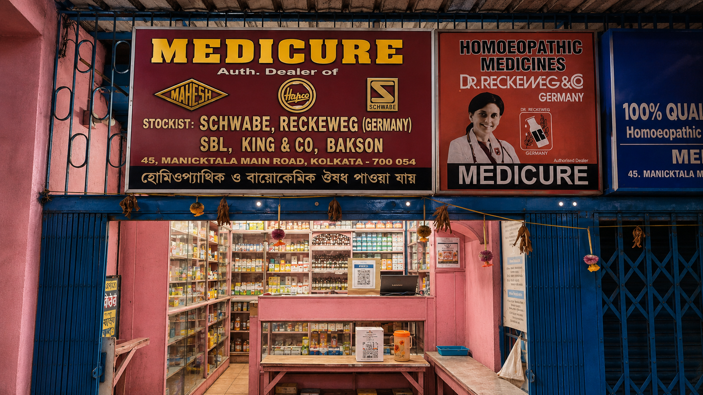
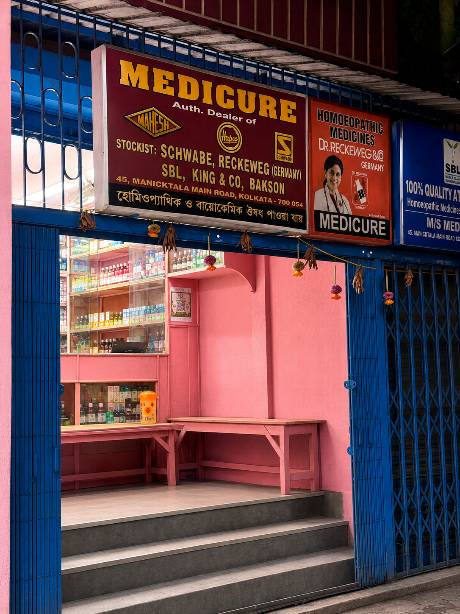
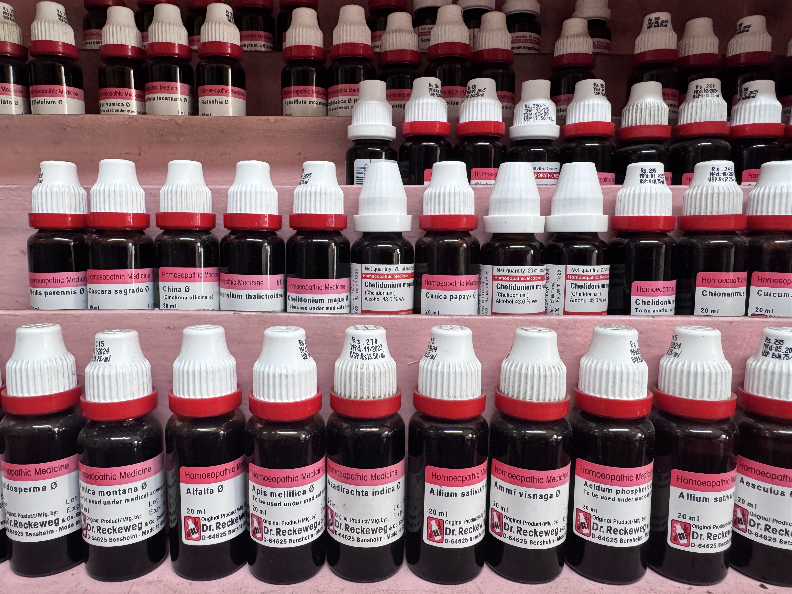

Medicine Store
Share a prescription photo or medicine list. The store team confirms names, potency, packaging, and pickup or local delivery options.
Start an OrderWelcome to Medicure Homeopathy
Search medicines, send a prescription, or consult Dr. Achintya Kumar Som at our Maniktala medicine store and clinic.
India-focused medicine profiles from official manufacturer catalogs. Medicure confirms local stock separately.

Medicure, Maniktala

Medicine shelvesBrand and pack availability varies. Ask the store for an exact match or equivalent.
Order medicines, share prescriptions, request pickup, or book a consultation without waiting on a long form.
Share a prescription photo or medicine list. The store team confirms names, potency, packaging, and pickup or local delivery options.
Start an Order
Request an appointment with Dr. Achintya Kumar Som for classical homeopathic case-taking and care planning.
Request a SlotSnap a picture and send it directly to Medicure on WhatsApp.
Useful for handwritten prescriptions, complex medicine names, dilutions, and potency combinations that are easier to photograph than type.
Attach via WhatsAppSearch the encyclopedia to identify a product, then send the exact name, potency, and pack to Medicure for availability.
Identify tinctures by source ingredient, manufacturer, and bottle format.
Check medicine names and potency notations such as X, C, LM, and Q.
Explore oral pellet and globule listings, ingredients, and pack descriptions.
Find tablet formats, biochemic names, and multi-ingredient records.
Compare listed combination ingredients, routes, and dosage forms.
Send a clear photo. The store team will help identify the written product before confirming stock.
Built for patients and families who want a simple human confirmation before buying medicines.
Send a prescription photo or type the requested remedies directly into the WhatsApp chat.
The team confirms names, potencies, dilutions, packaging, and batch expiry before billing.
Collect your sealed order from the store or coordinate local courier dispatch where available.
Medicine Encyclopedia
Search canonical medicines by name, synonym, ingredient, Indian manufacturer, form or potency. Each profile keeps official product variants, manufacturer-stated indications and labelled directions connected to their sources.
Remedy Finder
A guided educational starting point built from classical materia medica references and reviewed for patient-friendly language. Final medicine selection should be confirmed by a qualified practitioner.
Use this QR on posters, bills, and store counters for fast repeat orders.
This opens the shop WhatsApp number with a short greeting.
Clinical Authority
Sole Proprietor and Chief Medical Consultant at Medicure, with more than 35 years dedicated to classical homeopathic practice.
Dr. Som's consultation approach emphasizes the individual patient: health history, recurring patterns, sensitivities, lifestyle context, and long-term care goals.
Request a ConsultationDigestive, metabolic, and recurring systemic concerns requiring deeper case review.
Support for long-standing sensitivities, seasonal patterns, asthma, and bronchitis care.
Gentle consultation pathways for children and family care discussions.
Root-pattern evaluation for recurring skin conditions and internal triggers.
Find the clinic and medicine store on Maniktala Main Road, with long weekday hours and Sunday morning service.
45, Maniktala Main Road, Kolkata 700054
Monday to Saturday: 10:00 AM-10:30 PM
Sunday: 10:00 AM-2:00 PM
Medicine orders and prescription photos are handled on WhatsApp.
Medicure Homeopathy serves families looking for a homeopathic medicine shop, prescription support, and homeopathy consultation near Maniktala Main Road. Patients and medicine buyers commonly visit from nearby Kolkata and Calcutta neighborhoods including Shyambazar, Ultadanga, Kankurgachi, Sealdah, College Street, Hatibagan, Phoolbagan, Beliaghata, Dum Dum, Salt Lake, and surrounding areas.
Order sealed homeopathic medicines by sharing a prescription photo or medicine list on WhatsApp.
Book an appointment with Dr. Achintya Kumar Som for classical homeopathic case-taking.
Confirm names, potency, packaging, and pickup from the Maniktala store before billing.
Yes. Use the WhatsApp prescription button and attach a clear photo of the full prescription.
Yes. The remedy finder can start an educational inquiry, and final selection should be confirmed by a practitioner.
Appointments are recommended for consultations with Dr. Achintya Kumar Som.
Yes. Sunday hours are 10:00 AM-2:00 PM.
Medicure serves Maniktala, Shyambazar, Ultadanga, Kankurgachi, Sealdah, College Street, Hatibagan, Phoolbagan, Beliaghata, Dum Dum, Salt Lake, North Kolkata, Central Kolkata, and East Kolkata.